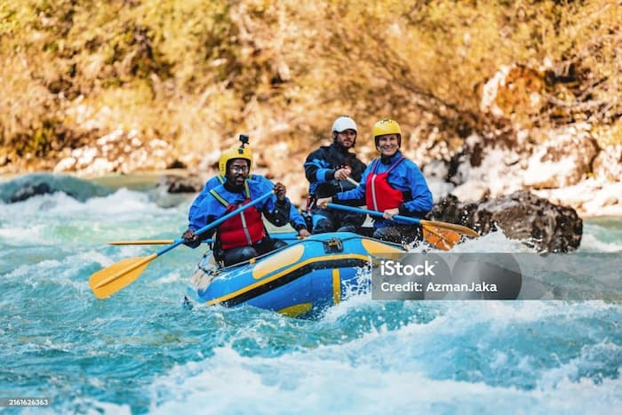
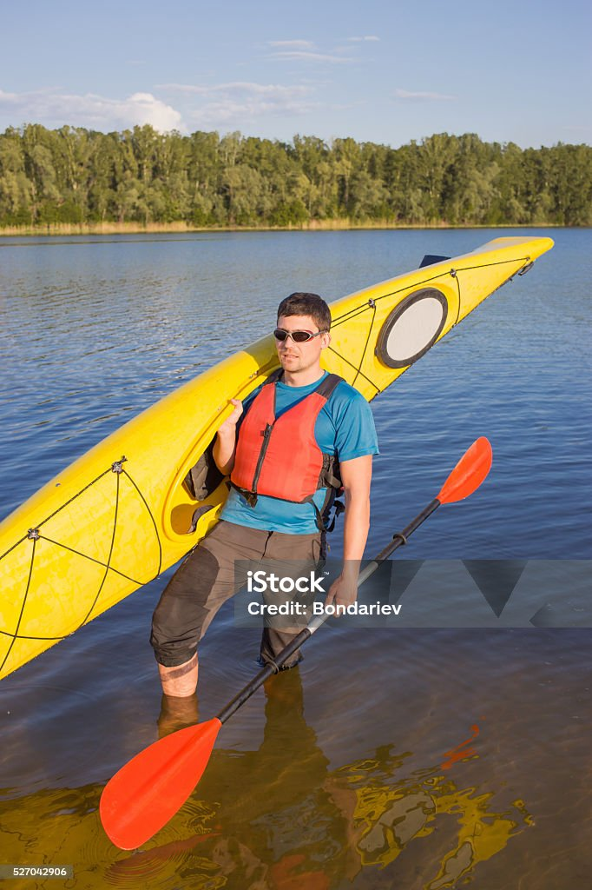

Discover white-water rafting in Colombia on iconic rivers like the Fonce and the Suárez in Santander. Tackle Class II–V rapids with certified guides, pro-grade gear, and solid safety protocols—nature, adrenaline, and teamwork in one of the country’s top adventure destinations.

